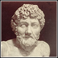
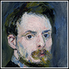
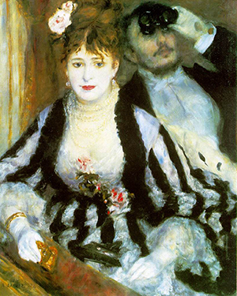
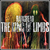

Post pubblicati di recente
Esopo
129 ERACLE E ATENA
Eracle passava per una viottola, quando scorse per terra una cosa che sembrava una mela.
Cercò di schiacciarla, ed ecco che la vide diventare grossa il doppio.
Allora prese a calpestarla con maggior forza e a picchiarla con la clava; ma quella si gonfiò e crebbe fino ad ostruire tutta la via.
Eracle lasciò cadere la clava e restò lì stupefatto.
Gli apparve allora Atena e gli disse:
"Férmati, fratel mio; questo è l'amore della contesa e della discordia:
se non lo stuzzicano, rimane come era in origine; ma se lo provocano, ecco come si gonfia".
La favola mostra chiaramente che le contese e le lotte sono causa di gravi danni.
Pierre-Auguste Renoir
Il palco (La loge), 1874 Courtrand Gallery Londra
Radiohead
Video Musicale Burn The Witch
Written by Radiohead
Produced & mixed by Nigel Godrich
Engineered by Nigel Godrich and Sam Petts-Davies
Assistant engineer at La Fabrique Studio; Maxime LeGuil
Mastered by Robert C. Ludwig at Gateway Mastering